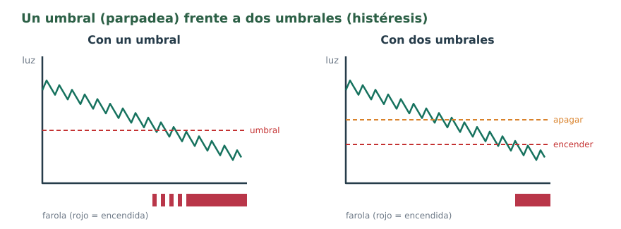

Variables
Una variable es un nombre que guarda un valor que puede cambiar mientras el programa funciona. Antes de usarla hay que decir de qué tipo es:
| Tipo | Qué guarda | Ejemplo |
|---|---|---|
int | Números enteros | int luz = analogRead(A1); |
float | Números con decimales (con punto) | float distancia = 20.5; |
bool | Verdadero o falso: true o false | bool encendida = false; |
const int | Un entero que no cambia nunca (los pines, los límites) | const int FAROLA = 12; |
Pon nombres que digan lo que guardan: distancia se entiende; x, no. Los nombres no llevan espacios, tildes ni eñes.
Condiciones
Con else if se encadenan varias preguntas: se comprueban por orden y solo se hace la primera que se cumple.
if (luz < 300) {
// muy oscuro
} else if (luz < 600) {
// penumbra
} else {
// mucha luz
}Para unir condiciones se usan las puertas lógicas de la unidad de electrónica digital:
| Se escribe | Puerta | Ejemplo |
|---|---|---|
&& | AND (y) | if (luz < 300 && distancia < 20): oscuro y alguien cerca |
|| | OR (o) | if (manual || encendida): en manual o si ya tocaba encender |
! | NOT (no) | if (!manual): si no está en manual |
| Compara | Significa |
|---|---|
== | igual |
!= | distinto |
< > | menor, mayor |
<= >= | menor o igual, mayor o igual |
Ahora tú. Con luz = 450 y distancia = 35, ¿se cumple luz < 500 && distancia < 30? ¿Y luz < 500 || distancia < 30?
Ver solución
La primera no: la luz cumple, pero la distancia no, y AND necesita las dos. La segunda sí: OR se conforma con una.
Bucles
loop()ya es un bucle: se repite siempre. Es el lazo de control: leer, decidir, actuar.forrepite un número conocido de veces, como la rampa del motor.while (condición) { … }repite mientras se cumpla la condición. Por ejemplo,while (digitalRead(SW1) == LOW) { }espera hasta que sueltes el pulsador.
El parpadeo junto al umbral
Con la farola del reto R3 pasa algo cuando anochece: la luz no baja de forma limpia, tiembla un poco. Cuando está justo en el umbral, la lectura pasa por encima y por debajo, y la farola se enciende y se apaga muchas veces seguidas.

La solución se llama histéresis: dos umbrales. Se enciende cuando la luz baja de uno y solo se apaga cuando sube por encima del otro. Entre los dos, se queda como estaba; para eso hace falta una variable que recuerde el estado.
Ejemplo: farola con histéresis
// Farola con histéresis: dos umbrales en vez de uno
const int LDR = A1;
const int FAROLA = 12;
const int ENCENDER = 300; // con menos luz que esto, se enciende
const int APAGAR = 400; // con más luz que esto, se apaga
bool encendida = false; // la variable recuerda cómo está
void setup() {
pinMode(FAROLA, OUTPUT);
Serial.begin(9600);
}
void loop() {
int luz = analogRead(LDR);
Serial.println(luz);
if (luz < ENCENDER) {
encendida = true;
} else if (luz > APAGAR) {
encendida = false;
}
// entre 300 y 400 no se cambia nada: se queda como estaba
if (encendida) {
digitalWrite(FAROLA, HIGH);
} else {
digitalWrite(FAROLA, LOW);
}
delay(200);
}Ahora tú. La farola está apagada y la luz baja a 350. ¿Se enciende? ¿Y si estaba encendida y la luz sube a 350?
Ver solución
En los dos casos se queda como estaba: 350 está entre los dos umbrales (300 y 400). Apagada sigue apagada y encendida sigue encendida.
El reto de hoy
Reto R6 · Farola con modo manual
Parte de la farola con histéresis y añádele un modo manual: al pulsar SW1, la farola se queda encendida pase lo que pase y se enciende el LED azul (13) como aviso; al pulsar SW2, vuelve al modo automático y el LED azul se apaga. Usa una variable bool llamada manual y comenta tu programa.
Está conseguido cuando… en la placa, el modo automático funciona sin parpadeos, SW1 y SW2 cambian de modo y el programa lleva comentarios que explican cada parte.
Si te atascas: el programa con huecos
Rellena cada ____: cada hueco es una palabra, un número o un signo que ya has visto en esta página.
// Reto R6: farola con histéresis y modo manual
const int LDR = A1;
const int FAROLA = 12;
const int AVISO_MANUAL = 13; // LED azul: estamos en modo manual
const int SW1 = 2; // pasa a manual
const int SW2 = 3; // vuelve a automático
const int ENCENDER = ____;
const int APAGAR = ____;
bool encendida = false;
bool manual = ____;
void setup() {
pinMode(FAROLA, OUTPUT);
pinMode(AVISO_MANUAL, OUTPUT);
pinMode(SW1, INPUT);
pinMode(SW2, INPUT);
Serial.begin(9600);
}
void loop() {
if (digitalRead(SW1) == LOW) {
manual = ____;
}
if (digitalRead(SW2) == LOW) {
manual = ____;
}
int luz = analogRead(LDR);
Serial.println(luz);
if (luz < ENCENDER) { // histéresis, como en el ejemplo
encendida = true;
} else if (luz > APAGAR) {
encendida = false;
}
if (____ || encendida) { // en manual, siempre encendida
digitalWrite(FAROLA, HIGH);
} else {
digitalWrite(FAROLA, LOW);
}
if (manual) {
digitalWrite(AVISO_MANUAL, HIGH);
} else {
digitalWrite(AVISO_MANUAL, LOW);
}
delay(200);
}Cuando funcione en la placa: enséñalo funcionando para que se anote en la lista de los retos. Después, en la tarea de Moodle Retos Arduino (código), pulsa Editar entrega (la primera vez, Agregar entrega), escribe R6 y pega debajo tu programa. Pulsa Guardar cambios. Cada reto nuevo va debajo del anterior.
manual = !manual; le da la vuelta a la variable, y luego hay que esperar a que se suelte el pulsador con un while.Compruébalo
Decide si cada frase es verdadera o falsa.
00:00: